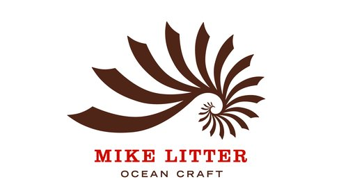
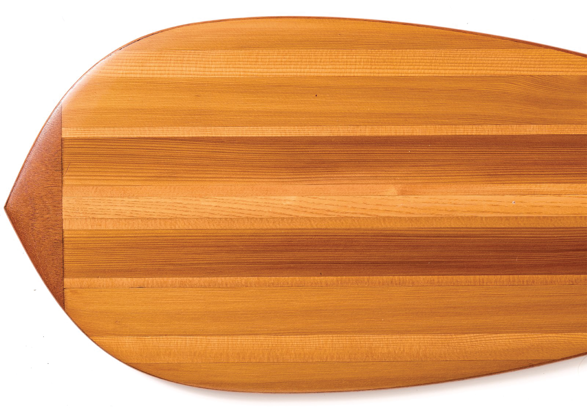
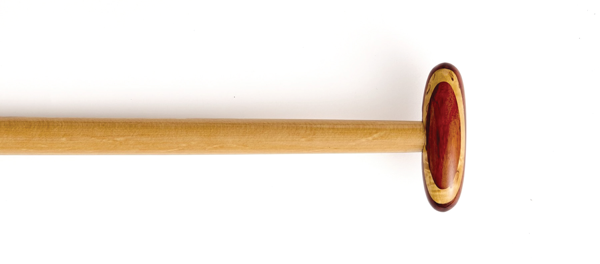
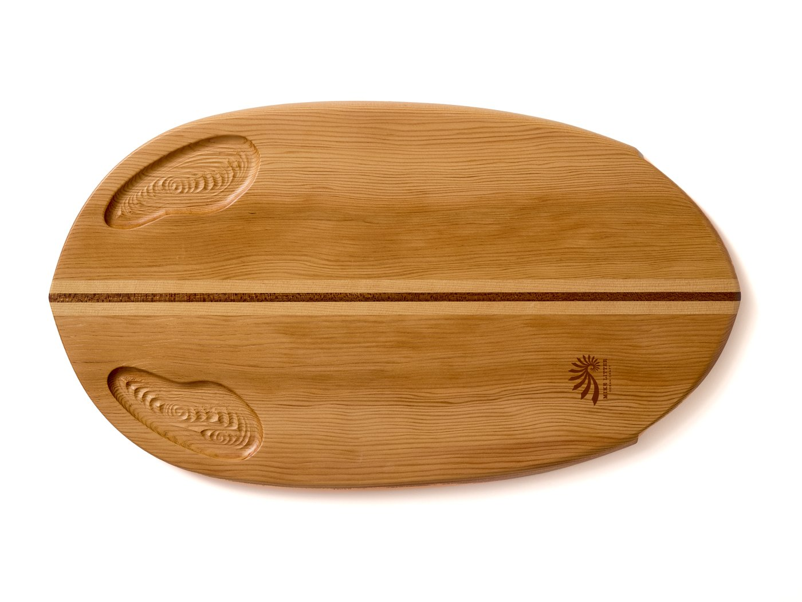
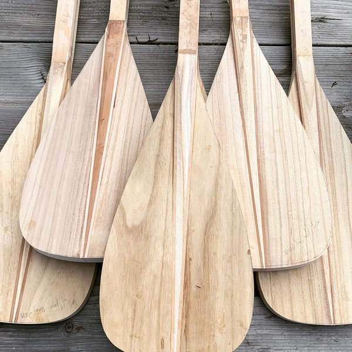
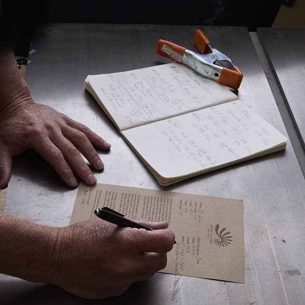
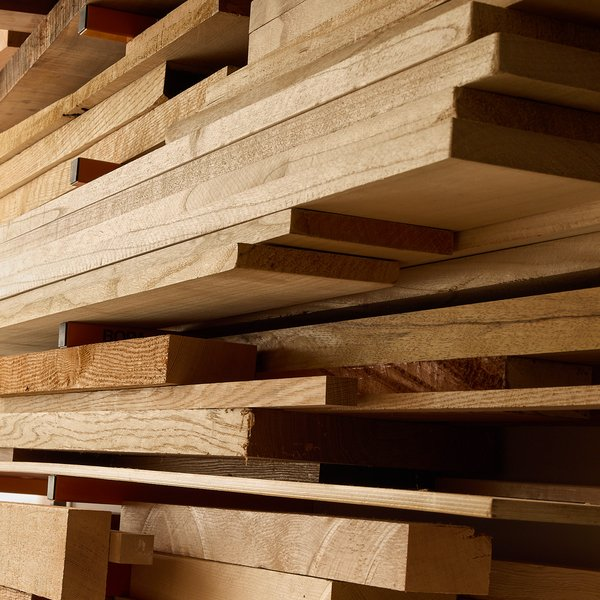
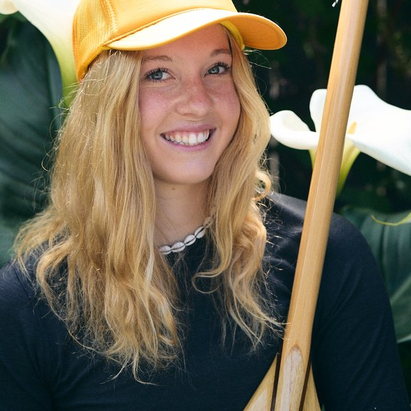
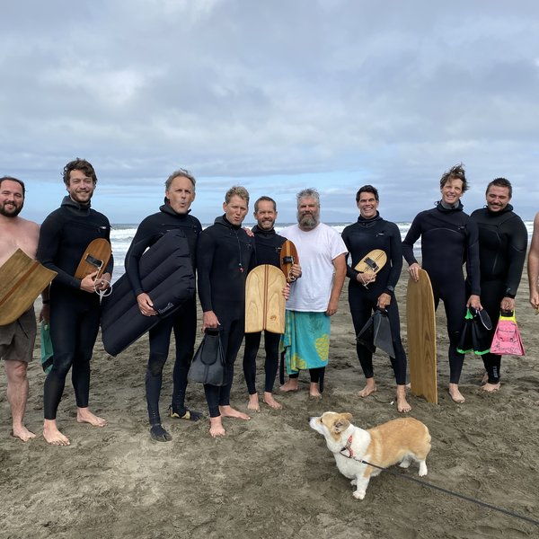

For centuries, people took to the sea upon craft they built themselves from resources close at hand. In doing so, ocean people developed an intimacy with their tools and the process by which they were made. Our modern tools are often made by people who don't also use them — machines we don't understand, using synthetic materials from far-away lands. We've lost that connection.

At the heart of my endeavor
is a simple offer:

I build high-performance ocean craft in my small San Francisco shop from wood and little else. My work rests on the belief that our experiences in the water are enhanced by tools with character. The Polynesian concept of Mana tells us that our instruments carry a soul — the soul of the people who use and craft them, and even the spirit of the materials themselves.
Come talk to me directly. Design your own templates. Learn about the trees that supply our beautiful materials. This is the process that yields ocean craft with a soul.




